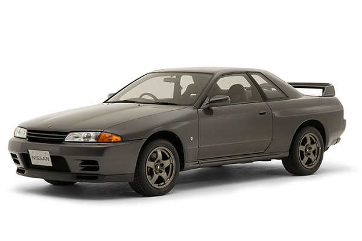
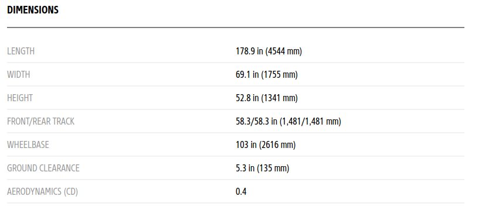
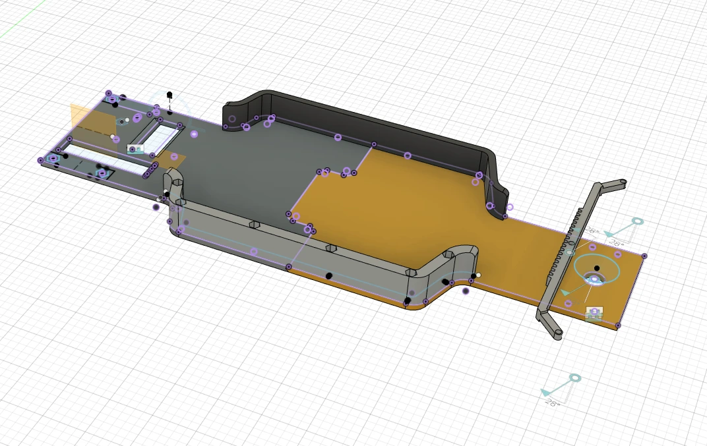
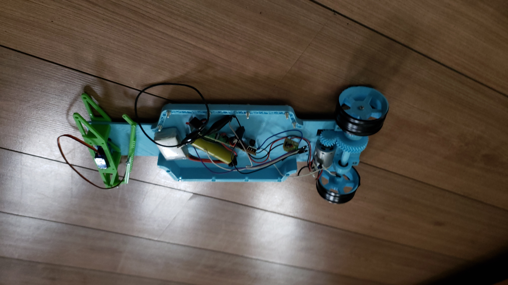

Objetivo:
Este proyecto tiene como objetivo la fabricación de un auto a radiocontrol impreso en 3D. Para lograr dicho objetivo fue necesario uso avanzado de Fusion360 y programas como CURA para la impresión 3D además de trabajar habilidades de resolución de problemas (como es común cuando se trata de traer a la realidad un prototipo digital).
Proceso de diseño y construcción
Primero que todo, elegí un auto atractivo para basar las medidas y estilo, pensé en muchos iconos japoneses de los 80s-90s como el Acura Integra, Nissan 240sx o el Mazda RX-7 hasta que recordé el legendario Nissan Skyline GTR R32 también conocido como "The Godzilla" debido a sus múltiples victorias y origen japonés.
 Nissan Skyline GT-R R32 (1989)Ya con el modelo definido, escale las dimensiones en una escala 1:12, use principalmente la distancia entre las ruedas(wheelbase) , el largo(lenght) y el ancho(width).
 https://www.autoevolution.com/cars/nissan-skyline-gt-r-r32-1989.html#aeng_nissan-skyline-gt-r-r32-1989-26-tt-280-hpCon las dimensiones ya definidas era momento de empezar a disenar en Fusion360, parti con la forma del chasis teniendo en cuenta la distancia de separacion entre las ruedas. Decidi separar el chasis por la mitad para poderlo imprimir sin problemas en la Ender3, para esto anadi agujeros para usar tornillos m3 y tambien disene unas paredes para otorgarle rigidez y poder unir las dos partes del chasis.
Primer Prototipo impreso
Ya con gran parte del chasis listo, decidi imprimirlo para ver si efectivamente, todo lo que llevaba funcionaba, el resultado fue mas que bueno:
Este proyecto aún no está terminado... seguiré añadiendo contenido próximamente.